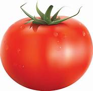
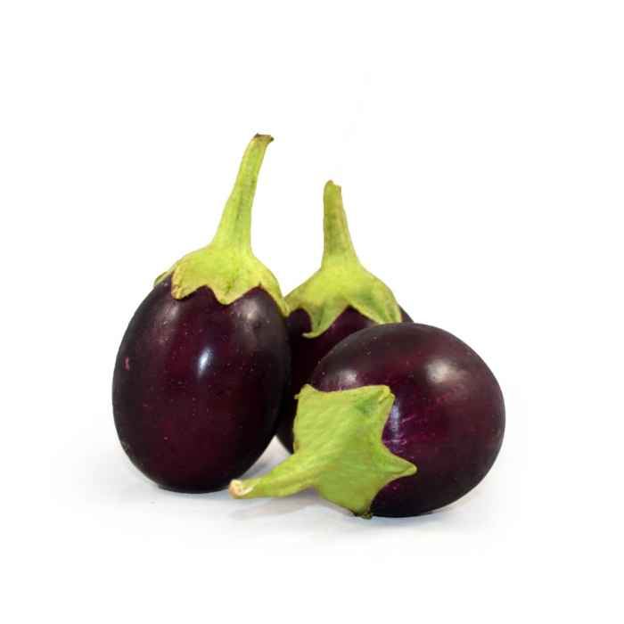
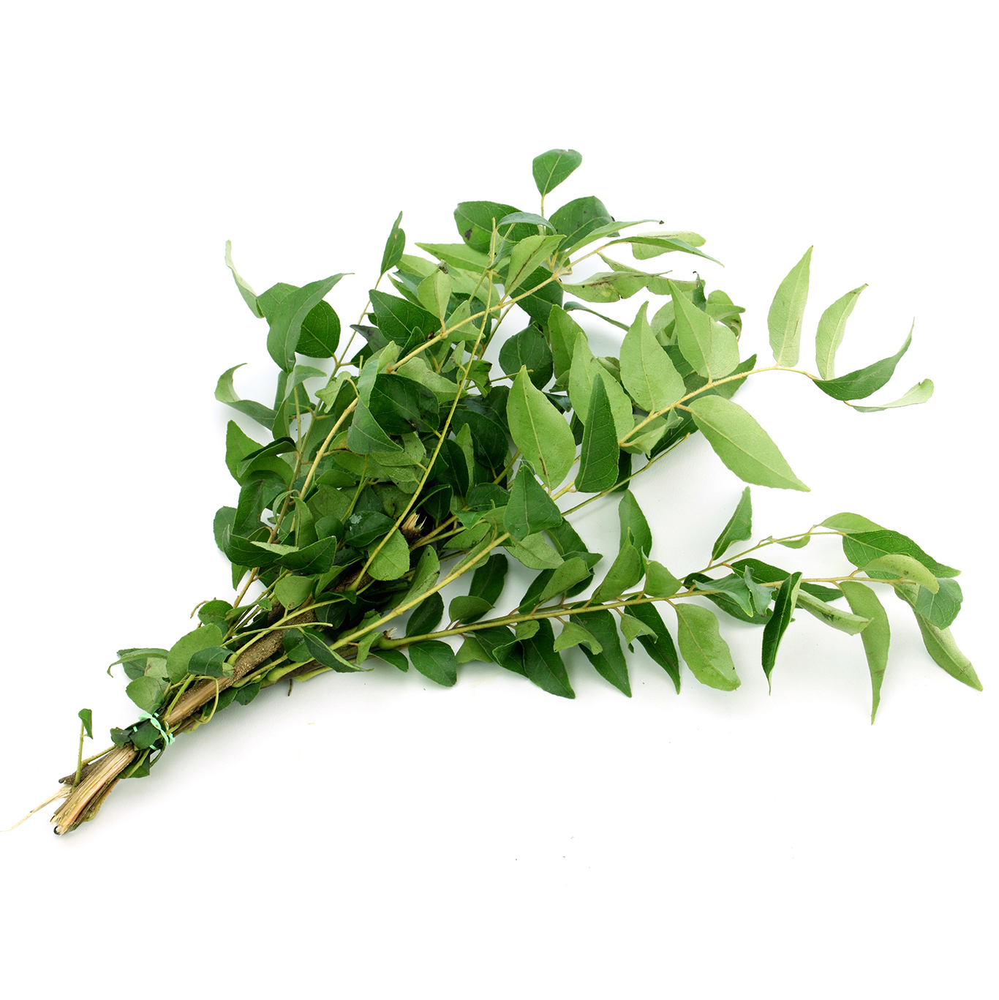
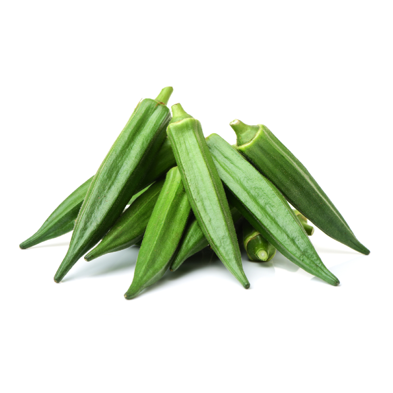

There is no single most healthy vegetable, but eating a variety of vegetables can improve health
and well-being. Nutritious options to try adding to the diet include spinach, peas, sweet
potatoes, and tomatoes. All vegetables contain healthful vitamins, minerals, and dietary fiber —
but some stand out for their exceptional benefits.
Pumpkin is the National Vegetable of India. No wonder why you see every vegetable vendor
carrying it as it is one of the most popular vegetables grown all over India and doesn’t require
special soil conditions. Pumpkin pairs well with daals, spices, and vegetables because it has a
sweet flavor.
vegetable, in the broadest sense, any kind of plant life or plant product, namely “vegetable
matter”; in common, narrow usage, the term vegetable usually refers to the fresh edible portions
of certain herbaceous plants— roots, stems, leaves, flowers, fruit, or seeds.
| SNo. | Veggi | Price/Kg |
| 1 |  Potato Potato |
70/- |
| 2 | Tomato | 60/- |
| 3 | Brinjal | 80/- |
| 4 | Curry Leaves | 10/- |
| 5 |  Pumpkin Pumpkin |
100/- |
| 6 | Lady's Finger | 80/- |
| 7 |  Cauli Flower Cauli Flower |
90/- |